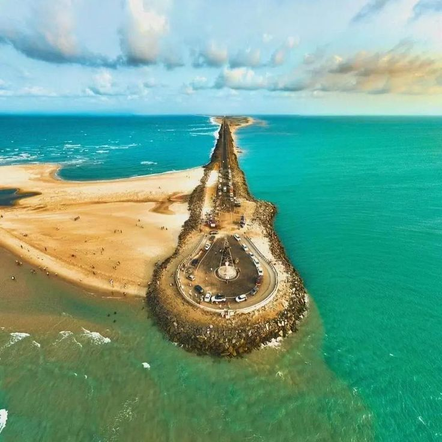

Dhanushkodi is a hauntingly beautiful ghost town located at the southern tip of Rameswaram island. This abandoned town was destroyed by a cyclone in 1964 and now stands as a mesmerizing destination where the Bay of Bengal meets the Indian Ocean.
The combination of turquoise waters, white sandy beaches, and abandoned ruins creates an otherworldly atmosphere. It's a photographer's paradise and offers a unique blend of natural beauty and historical intrigue.
- Ruins of the old town - church, railway station, and post office
- The confluence of Bay of Bengal and Indian Ocean
- Pristine beaches with crystal clear waters
- Ram Setu (Adam's Bridge) viewpoint
- Arichalmunai - the land's end point
October to March offers the best weather. Avoid monsoon season due to rough seas and strong winds. Early morning visits offer the most stunning light for photography.
Dhanushkodi is about 20 km from Rameswaram. You can hire a jeep or van from Rameswaram as regular vehicles are not allowed. The journey through shallow waters and sand is an adventure in itself.